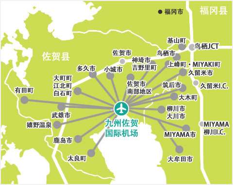
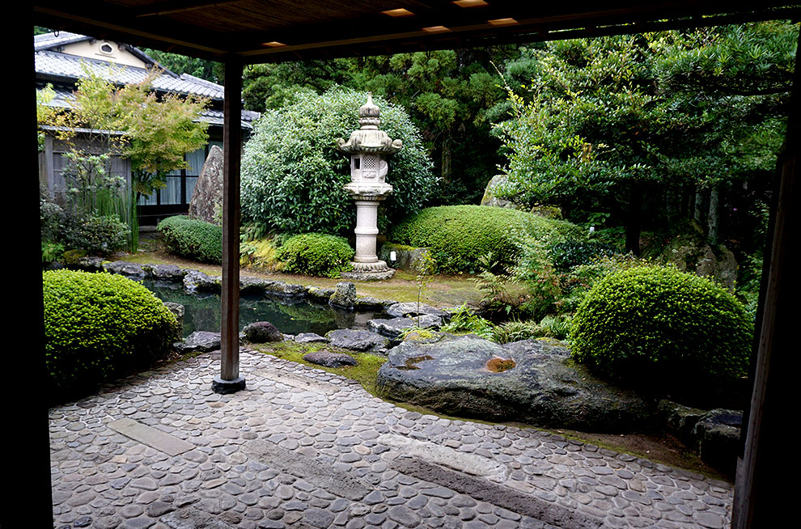
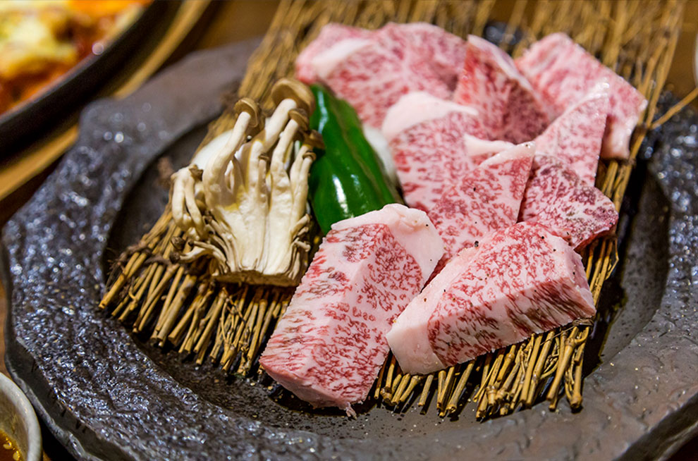

搭乘時間：2018/10/28-2019/03/30
| 航班號 | 航線 | 起飛時間 | 抵達時間 | 飛行日 |
| IT246 | 桃園－佐賀 | 08:40 | 11:55 | 每周四 |
| 07:10 | 10:25 | 每周日 | ||
| IT247 | 佐賀－桃園 | 12:55 | 14:35 | 每周四 |
| 11:25 | 13:05 | 每周日 |

巴士：
▪佐賀機場至佐賀市區，車程約30分鐘
▪車資∕時刻表：
| 佐賀機場 | 小々森北 （ｺｺﾞﾓﾘｷﾀ） |
東与賀 イオン前 |
袋入口 | 博物館前 | 県庁舎 | 県庁前 | 駅南本町 | 佐賀駅BC |
| 單程車資 | 310円 | 410円 | 510円 | 550円 | 570円 | 570円 | 600円 | 600円 |
| 9點35分 | 9點41分 | 9點44分 | 9點48分 | 9點51分 | 9點52分 | 9點55分 | 10點02分 | 10點10分 |
| 11點10分 | → 每個星期日運行佐賀機場～佐賀站公共汽車中心直行 → | 11點04分 | ||||||
| 12點10分 | → 每周星期一/星期三/星期六運行佐賀機場～佐賀站公共汽車中心直行 → | 12點40分 | ||||||
| 12點15分 | 12點21分 | 12點24分 | 12點28分 | 12點31分 | 12點32分 | 12點35分 | 12點42分 | 12點50分 |
| 12點30分 | → 每周星期一/星期三/星期六運行佐賀機場～佐賀站公共汽車中心直行 → | 13點00分 | ||||||
| 12點40分 | → 每個星期四運行佐賀機場～佐賀站公共汽車中心直行 → | 13點10分 | ||||||
| 14點35分 | 14點41分 | 14點44分 | 14點48分 | 14點51分 | 14點52分 | 14點55分 | 15點02分 | 15點10分 |
| 15點35分 | 15點41分 | 15點44分 | 15點48分 | 15點51分 | 15點52分 | 15點55分 | 16點02分 | 16點10分 |
| 16點55分 | → 佐賀機場～佐賀站公共汽車中心直行 → | 17點25分 | ||||||
| 18點35分 | 18點41分 | 18點44分 | 18點48分 | 18點51分 | 18點52分 | 18點55分 | 19點02分 | 19點10分 |
| 21點46分 | 21點49分 | 21點53分 | 21點48分 | 21點56分 | 21點57分 | 22點00分 | 22點07分 | 22點15分 |
※公共汽車座位不需要預訂
※時刻表依佐賀市營公共汽車網頁公告為準
高速巴士：
▪佐賀機場→福岡線 <適用期間> 2018年3月25日-2018年12月31日
▪車資∕時刻表：
| 站名 | 佐賀機場 | 高速基山 | 博多公共汽車 終點站 |
運河城博多 | 西鐵天神 高速巴士總站 |
| 單程車資 | - | 1,130円 | 1,650円 | 1,650円 | 1,650円 |
| 抵達時間 | 12點35分 | 13點44分 | 14點14分 | 14點24分 | 14點34分 |
※時刻表依西鐵公共汽車網頁公告為準
※兒童以及殘障人士單程車資是成人半價
利木津計程車：
▪上網即可預約的共乘計程車，直達又省錢
▪網路預約 : https://sagaap-limousinetaxi.com/
▪電話預約 : +81-952-24-4311
▪運行範圍：
▪車資（成人單程）：
| 服務地區 | 車費 | 服務地區 | 車費 |
| 佐賀市南區 | 2,000円 | 有田町 | 2,000円 |
| 鳥栖市 | 1,200円 | 大町町、江北町、白石町 | 1,500円 |
| 多久市 | 1,500円 | 太良町 | 2,000円 |
| 武雄市 | 2,000円 | 久留米市 | 1,000円 |
| 鹿島市 | 1,500円 | 大牟田市 | 1,200円 |
| 小城市 | 1,500円 | 柳川市、大川市 | 1,000円 |
| 嬉野溫泉（嬉野市） | 2,000円 | 筑後市 | 1,200円 |
| 神埼市、吉野里町 | 1,200円 | MIYAMA市 | 1,200円 |
| 基山町 | 1,200円 | 大木町 | 1,200円 |
| 上峰町、MIYAKI町 | 1,200円 |
※共乘制，可能會有和其他人併車的情形
※預約制，請於搭乘日期前一天16點前預約
※若有任何變更或未盡事宜請以リムジンタクシー官網為主
租賃汽車：
▪租車開始前24小時的費用是1,000日圆起
▪適用期間：即日起-2019年3月31日 (12月29日到2019年1月3日除外)
▪租賃費用：
| 利用人數 | 小型車(1,000-1,300cc) | 通用設計式樣車 | 包括混合等級 |
| 1人 | 2,000円 | 1,000円 | 3,000円 |
| 2人以上 | 1,000円 | 1,000円 | 2,000円 |
▪預約專線：
| 租賃汽車業者名 | 機場櫃台電話號碼 | 事務所電話號碼 |
| 豐田租賃汽車（外聯線） | 0952-46-0120 | 0952-28-0100 |
| 日本租賃汽車（外聯線） | 0952-46-0919 | 0952-31-5321 |
| 日產租賃汽車（外聯線） | 0952-46-0123 | 0952-31-4123 |
| 時代汽車租賃（外聯線） | 0952-46-0088 | 0952-46-0088 |
| 歐力士租賃汽車（外聯線） | 0952-46-0543 | 0952-29-8694 |
| Budget Rent-A-Car（外聯線） | 0952-46-2088 | 0952-36-7321 |
注意事項
1.出借場所限於九州佐賀國際機場事務所之內。
2.請出示利用當天的九州佐賀國際機場定期航班之登機證。
3.超過2個人利用的時候，請出示2份以上証明。
4.本優惠限利用當天第一次的24小時，超出24小時利用之費用需另行收費。
5.本優惠必須於電話事先預約
6.若於九州佐賀國際機場事務所以及佐賀縣內事務所、福岡縣西南方(大牟田市，柳川市，久留米市)、熊本縣北部(玉名市)以外地區還車，需要另外的費用。
7.未事前預訂情況下之租賃汽車計劃旅遊商品可以對本活動的變更。



嬉野溫泉
起源於8世紀，為日本三大美肌溫泉之一，深受女性喜愛；想擁有美肌務必參拜此處的豐玉姬神社
有田
日本瓷器的發祥地，保有許多傳統建築物，瓷器店、展示館、工坊隨處可見，推薦喜愛藝文的旅人前往
祐德稻荷神社
日本三大稻荷神社之一，據說祈求生意興旺和戀愛超靈驗，每年前來參拜的信徒可超過300萬人呢


佐賀牛
日本三大和牛之一，油脂細膩肉質緊實，擁有連名模都願意不顧身材也要大快朵頤的美味
呼子烏賊
以生魚片、天婦羅、燒賣等不同手法呈現出的三重美味，也帶來三種享受，一吃就上癮
嬉野湯豆腐
滑嫩香甜的湯豆腐，使用嬉野溫泉水熬煮，口感綿密黏稠，是嬉野當地的夢幻逸品之一